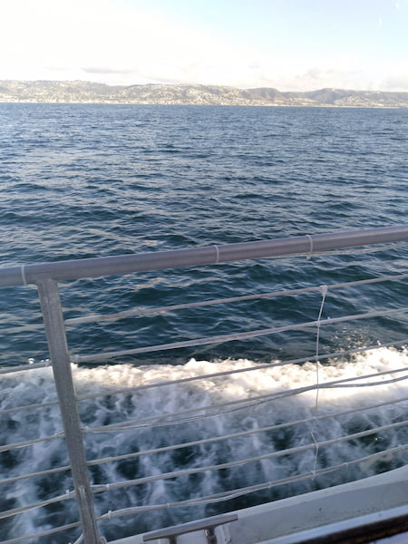

My favorite city is Long Beach, California, where I grew up. We're on the coast of the Pacific Ocean, which keeps the weather comfortable year-round, and provides a lot of beaches.
It's also close to whale-watching tours. I once saw orcas attack a stampede of dolphins.
